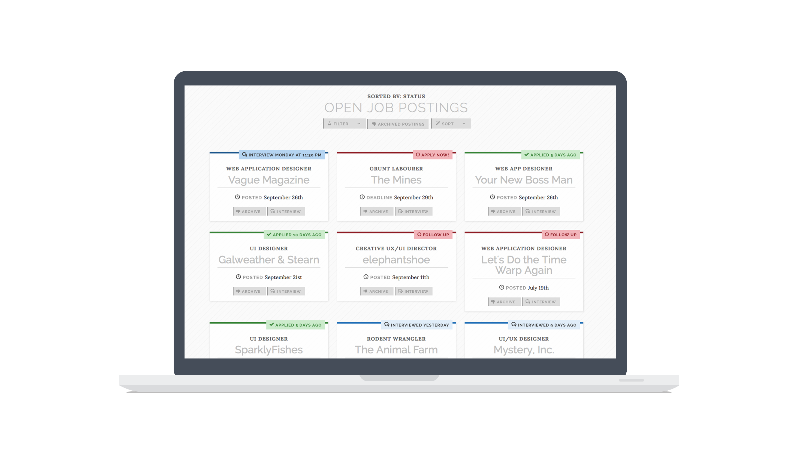
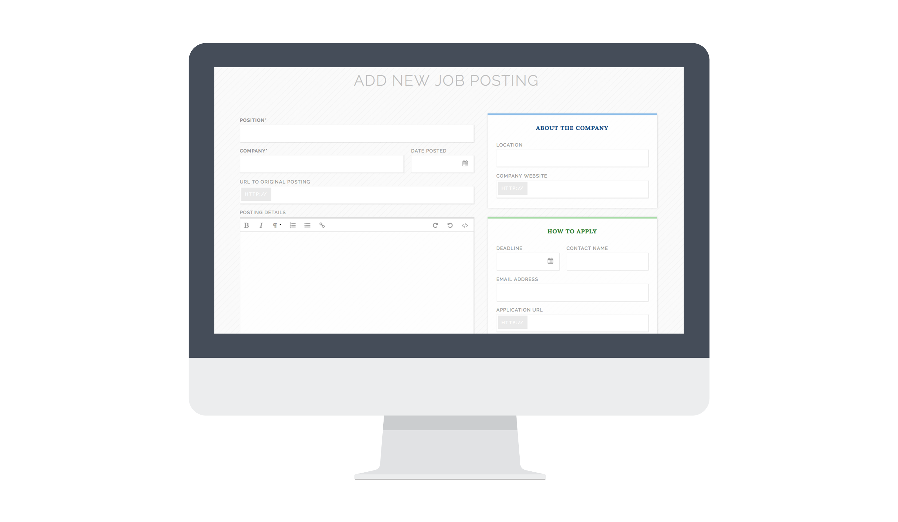

Job-hunting is hard. Suitor is a web app that aims to make it easier. A labour of love, Suitor is very much a work-in-progress, but gives me an opportunity to wear many hats and try lots of new things. Along the way, I've learned a lot about UI design, app development, and project management.
Suitor was an opportunity for to start exploring more UI problems, and I've learned a great deal doing so. Since I use the app myself, it's easier to indentify problematic areas, and I've learned that some of my assumptions about things aren't correct. Approaching the design with usability in mind before anything else presents a new challenge, but the result is a site that's intuitive to use and a pleasure to look at. At every stage, I consider the user—what their needs and challenges are, and I've tried to craft every aspect of the app—from the colours and patterns to the typography to the error messages&mdashl;to give Suitor as friendly and calm a personality as possible—something I think might sorely be required during a stressful job hunt!
When I started my job hunt, I was frustrated that I couldn't find a good way to keep track of the jobs I applied to. Naturally, when I couldn't find a good solution, I took a break from the job hunt and built one myself. Suitor has since become a labour of love, and it's taught me a great deal about UI design, Rails development, marketing, infrastructure, and user-centred design.
A great deal of the back-end code was written by me, but I work closely with a developer, particularly for some of the more complicated aspects of the code. This has made me comfortable with code reviews, both in a giving and receiving kind of way, and it's ensured that I keep all my changes in logical feature branches.
My aim with Suitor was to deploy as quickly as possible, and start testing sooner rather than later, so I'd be able to see what worked, and what didn't. This meant that as soon as I had something deploy-able set up, I tasked myself with setting up a VPS to host it. After some deliberation, I set up a VPS, installed and set up everything I needed, then configured Capistrano in order to automate deploys. It took a bit of trial and error, but I learned a great deal in the process, and I now have a stable server setup and can focus on working on the product itself.
I quickly realized that email would be a vital part of suitor's success, and spent a great deal of time coding like it was 1999. I learned to use Mandrill, integrate with my existing MailChimp account, and fully customize emails sent via Devise and via custom ActiveRecord modules. I carefully tailored a series of friendly introductory emails for beta testers and ensured that all emails sent by the system would be consistent in look and feel across a variety of email clients—and responsive as well!
Since it's open-source, I keep track of to-do items and planned features on GitHub, and I'm hoping to get more feedback from beta users in the coming months as I work more on it. I already spent some time developing an initial dashboard, allowing users an at-a-glance view of their progress and statistics, but I'd like to revamp this, as well as improving the empty-state UI so as to encourage users to start making use of the app.
See more